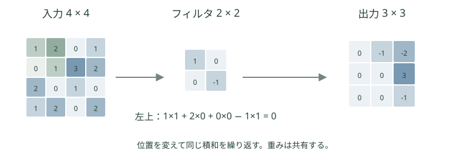

モデルの仕組みを知る · Convolutional Neural Networks
CNN
画像のどこにあるかが変わっても、同じ模様を同じ重みで探す。局所接続と重み共有が出発点です。
CNNの設計と利点
CNNもニューラルネットワーク（NN）の一種です。ここでは、各層のすべての要素を次の層へつなぐ全結合のネットワーク（MLP）と比べます。MLPでも画像を分類できますが、CNNは画像の性質に合わせて接続を工夫しています。
例えば、数字の「1」が画像の左にあっても右にあっても、縦線の形は共通です。また、線や角は、近くの画素をまとめて見ると分かります。CNNは、この「近くの画素に意味がある」「同じ模様は別の位置にも現れる」という性質を使います。
同じ4×4入力から9個の値を出す1層の比較。バイアスは省略。CNNは2×2フィルタ1種類・stride=1・padding=0。緑と橙の枠には同じ縦線があり、共通のフィルタで同じ値になる。MLP側の接続・出力は一部を表示。モデル全体の性能比較ではない。
1. 局所的な処理
MLPの全結合層では、一つの出力が全ての入力画素につながります。画像を一列に並べても画素の値は失われませんが、どの画素が隣同士なのかを接続の仕組みでは区別しません。CNNはまず2×2や3×3などの小さな範囲を見て、線や角などの局所的な模様を調べます。層を重ねると、それらを組み合わせて広い範囲を扱えます。
2. 重み共有
CNNは、一度学んだフィルタを左上にも右下にも使います。これが重み共有です。例えば縦線を調べるフィルタなら、画像内の各位置で縦線の有無を調べられます。MLPでは各接続の重みが独立しているため、別の位置にも同じ計算を使うという仕組みは最初から組み込まれていません。
3. パラメータ数の削減
上の図では、全結合層は16画素から9個の出力を作るため144個の重みを使います。畳み込み層は2×2の4個の重みを全位置で使い回します。画像が大きくなって計算する位置が増えても、同じフィルタの重みの数は増えません。これにより、画像の性質に合うパターンを、少ないパラメータで学びやすくなります。
ただし、CNNなら必ず高精度になるわけではありません。位置が変わっても画像全体の分類結果が必ず同じになるわけでもなく、データや学習の方法、画像をどう縮小するかによって性能は変わります。
CNNの構造と特徴の階層
畳み込みで複数の模様を調べ、poolingで縦横を小さくする処理を重ねます。最後に特徴をまとめ、画像全体の分類結果を作ります。
説明用の画像分類CNN。数字は高さ × 幅 × チャネル数。畳み込みは3×3・stride=1・padding=1、poolingは2×2・stride=2。表示した確率は例示値。四角の面積は模式的に縮小している。
最初の層は短い境界や模様に反応し、深い層は複数の特徴を組み合わせます。ただし、全てのチャネルが人の言葉で名付けられるとは限りません。
畳み込みの計算

固定の4×4入力と2×2フィルタを使い、3×3の出力を計算。バイアス0、stride=1、padding=0。
Kはフィルタの重み。出力位置(i,j)で、領域内の画素と対応する重みを掛けて足す。cは入力チャネル、oは出力チャネル。深層学習で「畳み込み」と呼ぶ操作は通常、フィルタを反転しない相互相関として実装される。
フィルタの位置を変えて計算を見る
入力の2×2の範囲とフィルタを掛けて足すと、出力の1マスになります。位置を動かして、対応する入力と出力を見比べてください。入力・重みは説明用の固定値で、バイアスは0です。
stride=1、padding=0 → 出力は3×3。
緑：フィルタが重なる入力 橙の枠：対応する出力。出力のマスを押しても位置を選べます。
左上の出力：1×1 + 2×0 + 0×0 + 1×(−1) = 0。
paddingは画像の周囲に値を補う操作です。ここでは0を使います。strideはフィルタを一度に何マス動かすかで、2にすると出力のマス数が減ります。
poolingは近い位置の値をまとめます。ここでは畳み込みの出力を2×2ずつ、歩幅2で区切り、最大値または平均値に置き換えます。端に2×2で収まらない行や列があれば使いません。ReLUは挟まず、負の出力もそのまま集約します。
一つの出力チャネルを作るには、入力の全チャネル分の積和を足します。3×3、入力3チャネル、出力16チャネルなら、重みは3×3×3×16個、バイアスを入れると448パラメータです。画像の縦横の大きさで重みの個数は増えません。
チャネルと受容野
全体図の重なった四角は、それぞれ1チャネルの特徴マップです。異なる重みのフィルタを4種類使うと4枚、8種類なら8枚の特徴マップができます。各フィルタは違う模様に反応するように学習されます。一方、poolingは各マップの縦横を小さくし、チャネル数は変えません。
受容野は、ある出力の値に影響する入力画像の範囲です。3×3の畳み込みをstride=1で2層重ねると、2層目の1マスには元画像の5×5の範囲が影響します。層を重ねることで、近くの模様を組み合わせて広い範囲を扱えます。
ResNetとU-Net
ResNetの残差接続
なぜResNetが作られたのでしょうか。通常のネットワークでは、層を増やすと表現力が増すはずなのに、訓練データに対する誤差まで悪化することがありました。ResNetはこの最適化の難しさに対し、入力をそのまま通す経路を作り、追加の層は入力からの変化分を学ぶようにしました。
同じ形状なら入力xと変換F(x)を足せる。形状が違うときは射影でそろえる。
層を増やせば自動的に学習しやすくなるわけではありません。残差接続は、入力にどの変化を加えるかを学べるようにし、深いネットワークを最適化する助けになります。
U-Netの構造
U-Netは、少ない注釈付きの生体・医用画像から、細胞などの領域を画素単位で分けるために作られました。何が写っているかを捉えるには広い範囲が必要ですが、縮小するだけでは細かな位置が失われます。縮小側と拡大側をつなぐ構造で文脈と位置を合わせ、データ拡張も使って限られた画像を活用する設計です。
深さは最下段を含む3段に簡略化。縮小2回・拡大2回で、同じ解像度同士をskip connectionでつなぐ。矢印先では特徴を連結して畳み込む。空間サイズを保つpaddingを使う例で、原論文の切り出し処理は省略。
分類は画像全体を一つの出力へまとめますが、分割は画素ごとの出力を必要とします。U-Netでは縮小側の特徴を拡大側へ渡し、細かい境界の推定を助けます。Diffusionでは同様の構成でノイズなどを予測できます。
学習・利用・限界
学習では各位置に使った同じフィルタへ、すべての位置から勾配が集まります。利用時には学んだフィルタを固定して積和を計算します。分類・分割・ノイズ予測など、出力と損失を変えることで用途が広がります。
局所性と重み共有は、少ないパラメータで画像を扱う助けになります。一方、遠く離れた要素の関係には層や別の仕組みが必要です。位置をずらした入力に特徴マップも対応してずれる性質（並進同変性）が基本ですが、境界処理やstrideで厳密には崩れることがあり、回転や大きさの変化に自動的に強いわけでもありません。